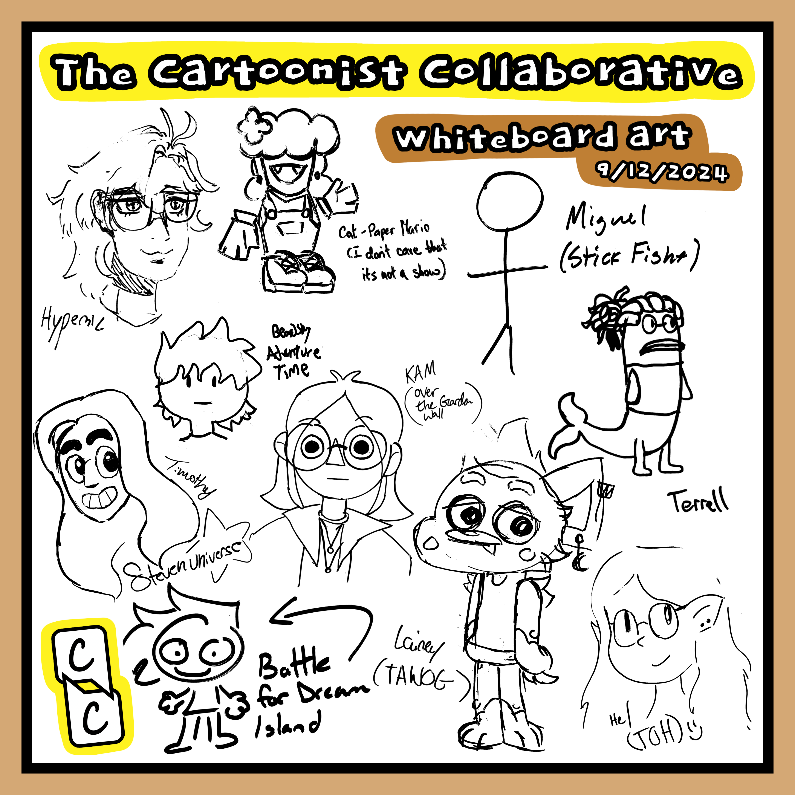
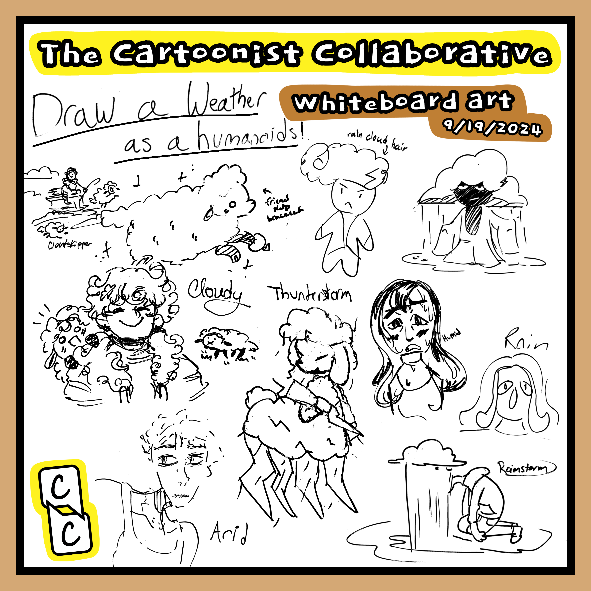

Welcome to the Cartoonist Collaborative! We focus on making collaborative short form creative works (primarily comics!) to publish in a zine once a year.
We meet once a week during the semester, Thursdays from 6 to 8 in AJ 341. We discuss current projects, give feedback, and draw on the whiteboard.

